Ιδέα και σχεδιασμός: Σταμάτης Κοκολόγος, εκπαιδευτικός ΠΕ70, 22ο Δημοτικό Σχολείο Λαμίας
Για πληροφορίες, προβλήματα ή προτάσεις βελτίωσης:
Κοκολόγος Σταμάτης, ΠΕ70 · https://github.com/stam1966/efimeries-ekpaideftikon/issues
Για μια νέα σχολική χρονιά ακολουθήστε αυτή τη σειρά (τα βήματα αντιστοιχούν στους αριθμούς της πλαϊνής μπάρας):
Η εφαρμογή οργανώνει τις εφημερίες των εκπαιδευτικών με στόχο τη λειτουργικότητα του σχολείου και τη δίκαιη κατανομή σε όλο το σχολικό έτος. Κρατά ιστορικό αλλαγών, αντικαταστάσεων και πραγματοποιημένων εφημεριών, ώστε η κατανομή να συνεχίζει δίκαια όσο προχωρά η χρονιά.
Ανοίγει σε δικό της παράθυρο (με τη βοήθεια του Microsoft Edge, που υπάρχει σε κάθε Windows 10/11· αν δεν βρεθεί, ανοίγει ο προεπιλεγμένος περιηγητής). Λειτουργεί μόνο στον υπολογιστή σας: δεν είναι προσβάσιμη από το δίκτυο και τα δεδομένα δεν φεύγουν από τον υπολογιστή ή από τον κοινό φάκελο του σχολείου. Κλείνει με Αρχείο → Έξοδος ή απλώς κλείνοντας το παράθυρο.
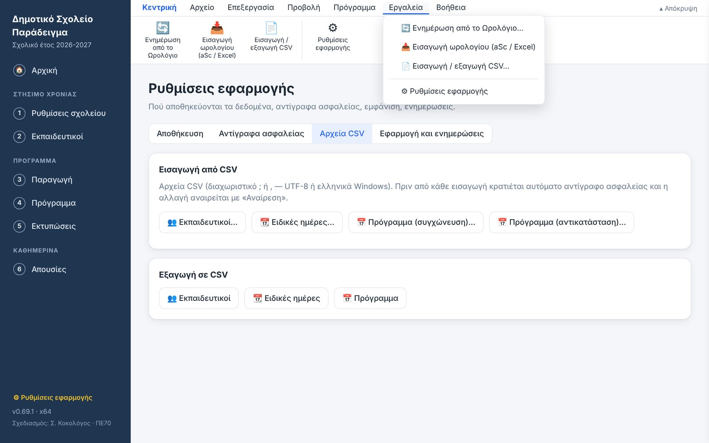
| Περιοχή | Τι περιέχει |
|---|---|
| Πλαϊνή μπάρα | Τα βήματα της δουλειάς σε ομάδες: Αρχική · Στήσιμο χρονιάς (1 Ρυθμίσεις σχολείου, 2 Εκπαιδευτικοί) · Πρόγραμμα (3 Παραγωγή, 4 Πρόγραμμα, 5 Εκτυπώσεις) · Καθημερινά (6 Απουσίες). Κάτω: Ρυθμίσεις εφαρμογής (αποθήκευση, αντίγραφα, αρχεία CSV, εμφάνιση, ενημερώσεις). |
| Μενού | Αρχείο, Επεξεργασία, Προβολή, Πρόγραμμα, Εργαλεία, Βοήθεια — όλες οι ενέργειες σε ένα σημείο. |
| Γραμμή εργαλείων | Μεγάλα εικονίδια με τις ενέργειες του μενού που επιλέξατε («Κεντρική»: οι πιο συχνές). Το «▴ Απόκρυψη» δεξιά την κρύβει. |
Αν είναι εγκατεστημένο και το Ωρολόγιο Σχολείου, εμφανίζεται εικονίδιο μετάβασης στην Αρχική, στην πλαϊνή μπάρα και στο μενού Εργαλεία.
Ο απλούστερος τρόπος είναι το Setup της σουίτας «Σχολικές Εφαρμογές», που εγκαθιστά μαζί το Ωρολόγιο Σχολείου και τις Εφημερίες: github.com/stam1966/orologio-sxoleiou/releases/latest/download/Sxolikes_Efarmoges_Setup.exe. Μόνο οι Εφημερίες: github.com/stam1966/efimeries-ekpaideftikon/releases/latest/download/Efimeries_Setup_x64.exe (32-bit: …_x86.exe). Δεν χρειάζονται δικαιώματα διαχειριστή. Αν τα Windows δείξουν «Τα Windows προστάτευσαν τον υπολογιστή σας», πατήστε «Περισσότερες πληροφορίες» → «Εκτέλεση οπωσδήποτε».
Τα δεδομένα δεν διαγράφονται ποτέ από ενημέρωση ή απεγκατάσταση. Η απεγκατάσταση γίνεται από τις «Εφαρμογές» των Windows.
Υπάρχει και φάκελος χωρίς εγκατάσταση (EfimeriesPortable_x64). Για μεταφορά σε άλλον υπολογιστή αντιγράψτε ολόκληρο τον φάκελο, όχι μόνο το .exe.
Ο φάκελος δεδομένων έχει τους υποφακέλους data (μία βάση ανά σχολικό έτος), backups (αντίγραφα ασφαλείας), exports και logs (καταγραφή σφαλμάτων, χρήσιμη αν χρειαστεί βοήθεια). Ποιος φάκελος χρησιμοποιείται φαίνεται στις Ρυθμίσεις εφαρμογής → Αποθήκευση, όπου και αλλάζει.
Τα δεδομένα πρέπει να βρίσκονται σε έναν κοινό φάκελο που βλέπουν και οι δύο υπολογιστές (κοινόχρηστος φάκελος, NAS). Στις Ρυθμίσεις εφαρμογής → Αποθήκευση του πρώτου υπολογιστή επιλέξτε τον φάκελο με «Αντιγραφή των τρεχόντων δεδομένων»· στον δεύτερο, τον ίδιο φάκελο με «Χρήση των δεδομένων που υπάρχουν ήδη». Προτιμήστε διαδρομή δικτύου (π.χ. \\ΥΠΟΛΟΓΙΣΤΗΣ\Εφημερίες) αντί για γράμμα μονάδας. Με τη σουίτα «Σχολικές Εφαρμογές» ο κοινός φάκελος ορίζεται από το Setup και οι Εφημερίες χρησιμοποιούν τον υποφάκελο «Εφημερίες».
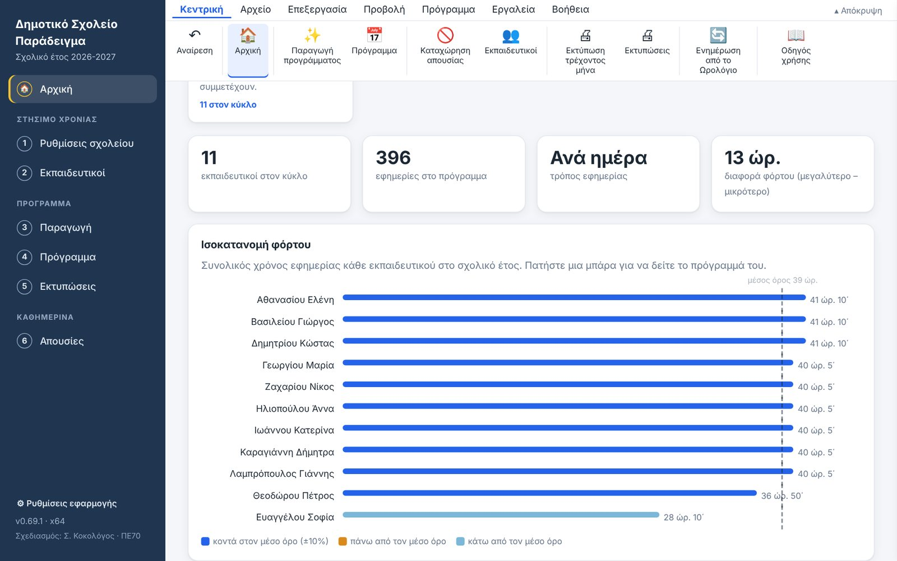
Η Αρχική δείχνει με μια ματιά:
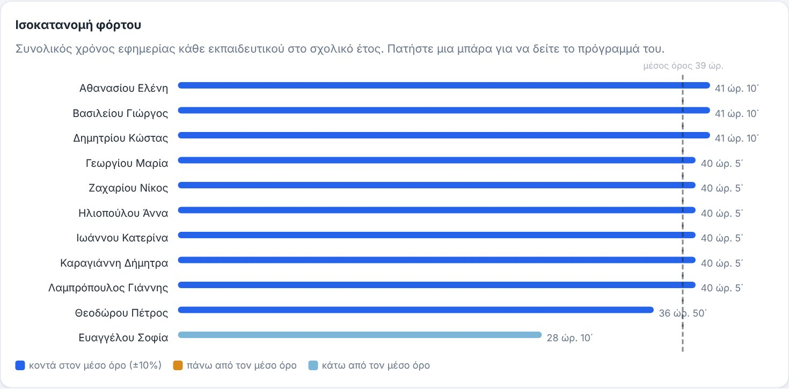
Κάθε μπάρα είναι ο συνολικός χρόνος εφημερίας ενός εκπαιδευτικού στο σχολικό έτος. Η διακεκομμένη γραμμή είναι ο μέσος όρος. Μπλε = κοντά στον μέσο όρο (±10%), πορτοκαλί = πάνω, γαλάζιο = κάτω. Περνώντας το ποντίκι φαίνεται η διαφορά από τον μέσο όρο· με κλικ ανοίγει το πρόγραμμα του εκπαιδευτικού.
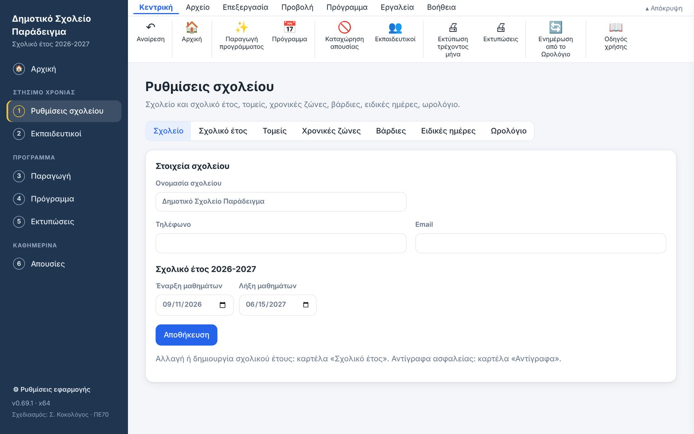
Οι Ρυθμίσεις σχολείου έχουν καρτέλες: Σχολείο, Σχολικό έτος, Τομείς, Χρονικές ζώνες, Βάρδιες, Ειδικές ημέρες, Ωρολόγιο.
Ονομασία, τηλέφωνο, email και έναρξη / λήξη μαθημάτων. Η ονομασία και το σχολικό έτος εμφανίζονται στις εκτυπώσεις. Η παραγωγή προγράμματος χρησιμοποιεί τις ημερομηνίες μαθημάτων.
Κάθε σχολικό έτος αποθηκεύεται σε ξεχωριστό αρχείο· ό,τι αλλάξετε σε ένα έτος δεν επηρεάζει τα άλλα. Από εδώ ανοίγετε άλλο έτος ή δημιουργείτε νέο, επιλέγοντας τι θα αντιγραφεί από το τρέχον (εκπαιδευτικοί, διαθεσιμότητα, τομείς, χρονικές ζώνες, βάρδιες, τρόπος εφημερίας, στοιχεία σχολείου).
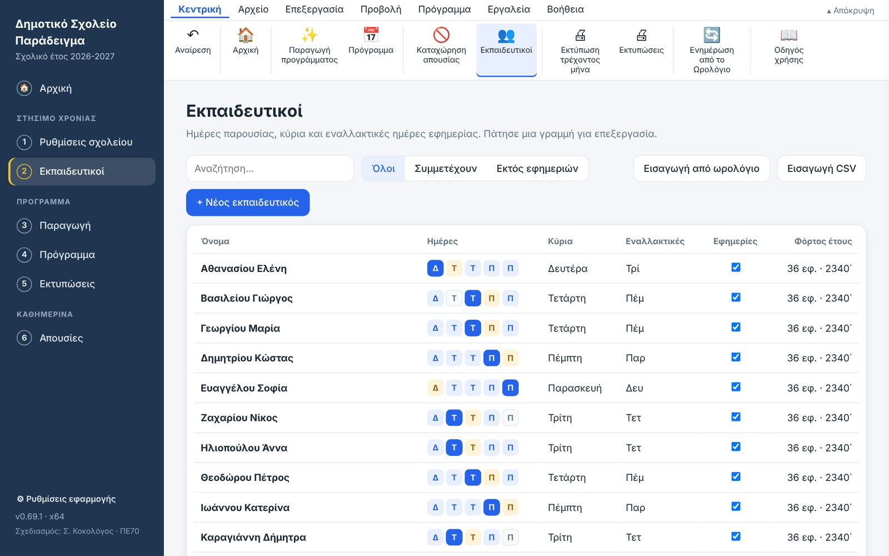
Για κάθε εκπαιδευτικό καταχωρούνται μόνο όσα χρειάζονται για την εφημερία: ονοματεπώνυμο, αν συμμετέχει στις εφημερίες, αν είναι ενεργός/ή, ημέρες παρουσίας, κύρια και εναλλακτικές ημέρες και παρατηρήσεις. Πατήστε μια γραμμή για επεξεργασία ή «+ Νέος εκπαιδευτικός».
Εκπαιδευτικοί που δεν κάνουν εφημερίες (π.χ. από διάθεση) δηλώνονται με το κουτάκι στη στήλη «Εφημερίες». Το φίλτρο «Όλοι / Συμμετέχουν / Εκτός εφημεριών» δείχνει κάθε ομάδα.
Στους τρόπους «Ανά διάλειμμα» και «Ανά βάρδια» ορίζετε στο παράθυρο του εκπαιδευτικού σε ποια διαλείμματα ή βάρδιες είναι διαθέσιμος και ποιους τομείς μπορεί να καλύψει. Ο ίδιος εκπαιδευτικός δεν τοποθετείται ποτέ στο ίδιο διάλειμμα της ίδιας ημέρας σε δύο τομείς.
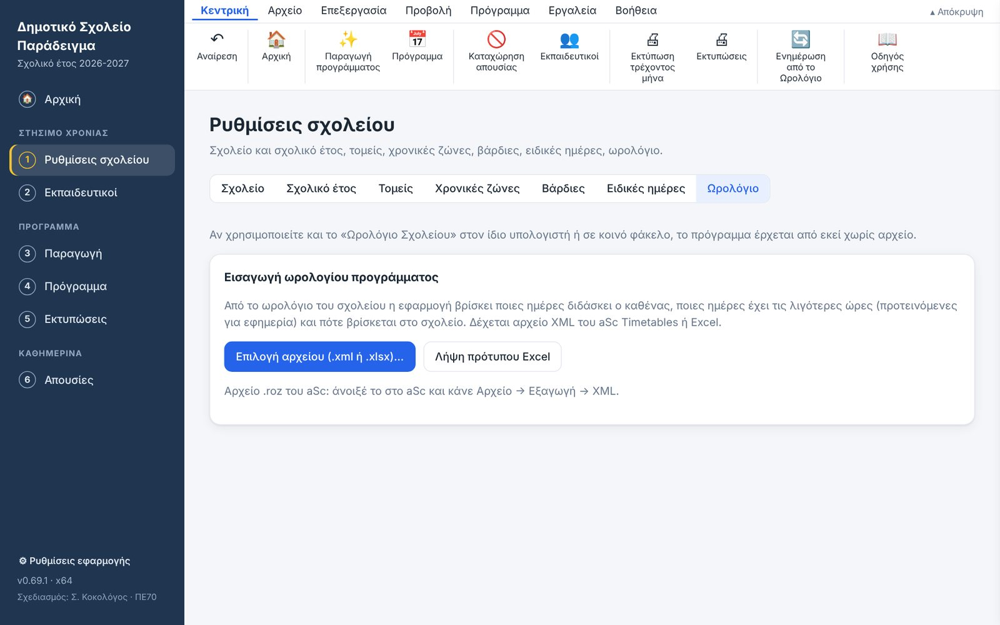
Αντί να καταχωρήσετε με το χέρι ημέρες και διαθεσιμότητα, εισαγάγετε το ωρολόγιο πρόγραμμα (Ρυθμίσεις σχολείου → Ωρολόγιο, ή Εργαλεία → Εισαγωγή ωρολογίου): αρχείο .xml από εφαρμογή παραγωγής ωρολογίων προγραμμάτων (π.χ. aSc: Αρχείο → Εξαγωγή → XML) ή .xlsx με την ίδια μορφή. Πριν γίνει οποιαδήποτε αλλαγή εμφανίζεται προεπισκόπηση με την αντιστοίχιση ονομάτων (σειρά ονόματος/επωνύμου, τόνοι και αρχικά δεν πειράζουν) και επιλέγετε τι θα ενημερωθεί:
Αν χρησιμοποιείτε και το Ωρολόγιο Σχολείου, δεν χρειάζεται αρχείο: Εργαλεία → Ενημέρωση από το Ωρολόγιο… δείχνει την ίδια προεπισκόπηση. Αρχικά επιλέγεται μόνο η δημιουργία εκπαιδευτικών που λείπουν, οπότε ο τρόπος παραγωγής δεν αλλάζει χωρίς δική σας απόφαση. Οι απουσίες από τις Αναπληρώσεις του Ωρολογίου εμφανίζονται στη σελίδα Απουσίες (κεφάλαιο 10).
Εκπαιδευτικοί εισάγονται και από αρχείο CSV (κεφάλαιο 11· υπόδειγμα: teachers_template.csv).
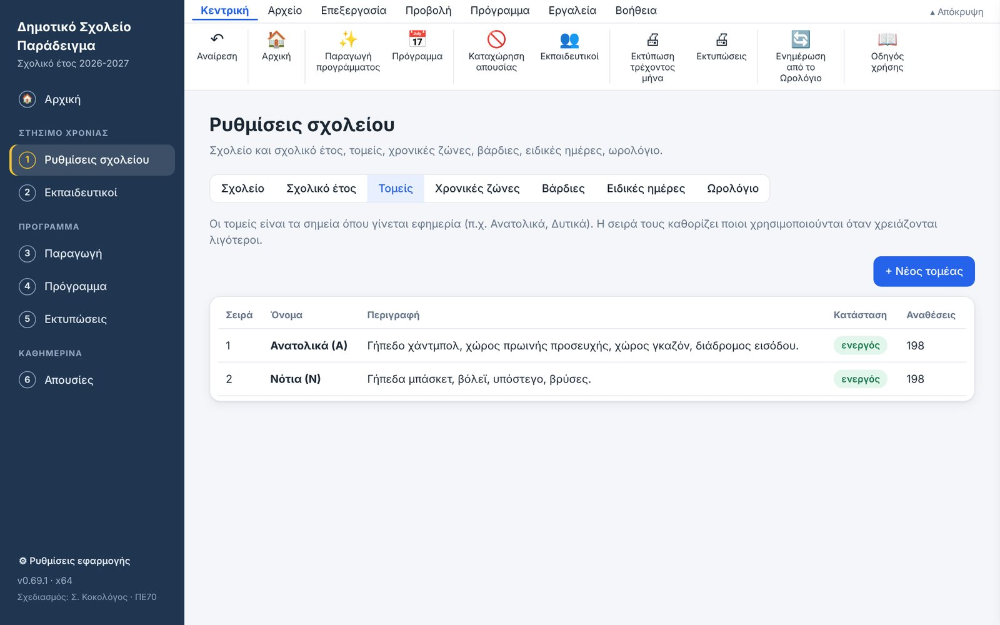
Οι τομείς είναι οι χώροι που πρέπει να καλυφθούν (π.χ. «Ανατολικά (Α)» και «Δυτικά (Δ)»). Για κάθε τομέα ορίζετε ονομασία, περιγραφή, αν είναι ενεργός και τη σειρά εμφάνισης. Αν αλλάξετε την ονομασία ενός τομέα, η νέα ονομασία εμφανίζεται αυτόματα και στο ήδη παραχθέν πρόγραμμα, στις εκτυπώσεις και στα σύνολα, χωρίς αναδημιουργία.
Καταχωρείτε μεμονωμένη ημέρα ή ολόκληρο διάστημα (από–έως): αργίες, διακοπές Χριστουγέννων/Πάσχα, εκδρομές, σχολικές γιορτές. Μια ειδική ημέρα μπορεί να είναι χωρίς εφημερία ή ημέρα όπου ισχύουν μόνο συγκεκριμένες χρονικές ζώνες και τομείς (π.χ. γιορτή με προσέλευση σε 3 τομείς, χωρίς διαλείμματα και αποχώρηση με 1 τομέα).
Οι χρονικές ζώνες είναι η βάση για τον τρόπο «Ανά διάλειμμα» και για τις βάρδιες: Προσέλευση, 1ο διάλειμμα, 2ο, 3ο, Αποχώρηση ή ό,τι άλλο χρειάζεται το σχολείο. Ενδεικτικά για Δημοτικό:
| Ζώνη | Ώρα | Διάρκεια |
|---|---|---|
| Προσέλευση | 08:00–08:15 | 15΄ |
| 1ο διάλειμμα | 09:40–10:00 | 20΄ |
| 2ο διάλειμμα | 11:30–11:45 | 15΄ |
| 3ο διάλειμμα | 12:25–12:35 | 10΄ |
| Αποχώρηση | 13:15–13:20 | 5΄ |
Χρησιμοποιούνται μόνο στον τρόπο «Ανά βάρδια / ζώνη» (Γυμνάσιο, Λύκειο ή σύνθετα ωράρια). Η βάρδια δεν ορίζεται μόνο με ώρα έναρξης/λήξης: επιλέγετε ποια διαλείμματα περιλαμβάνει (π.χ. 1η βάρδια = Προσέλευση, 1ο και 2ο διάλειμμα) και ποιους τομείς καλύπτει. Μπορεί να οριστεί γενική σύνθεση για όλη την εβδομάδα και διαφορετική για συγκεκριμένη ημέρα, καθώς και αναπληρωματικός ανά βάρδια. Η απλή τοποθέτηση ως αναπληρωματικού δεν μετρά στα σύνολα· μετρά μόνο αν χρησιμοποιηθεί σε πραγματική αντικατάσταση.
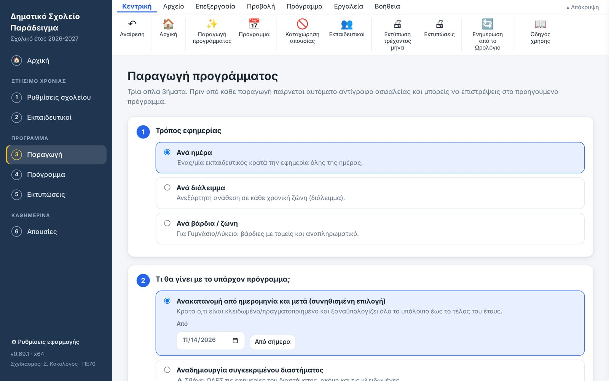
Η οθόνη έχει τρία βήματα:
Κάθε επιθυμητό κριτήριο ζυγίζεται σε κλίμακα 0–5 (0 = αγνόηση, 5 = πολύ σημαντικό):
Η επιλογή «Μείνε στη θέση σου» (ενεργή από προεπιλογή) κάνει την αναδημιουργία να κρατά όσες εφημερίες γίνεται όπως ήταν: μετά τον υπολογισμό η εφαρμογή ανταλλάσσει εκπαιδευτικούς μέσα στην ίδια εβδομάδα (ίδια λεπτά), ώστε να επανέλθουν στις θέσεις που είχαν, χωρίς να αλλάζουν τα σύνολα κανενός. Ό,τι είναι υποχρεωτικό ισχύει πάντα: διαθεσιμότητα, απουσίες, μία εφημερία ανά ημέρα/ζώνη, αριθμός θέσεων ανά τομέα.
Μετά την παραγωγή εμφανίζεται σύνοψη: πόσες εφημερίες έχει το νέο πρόγραμμα και πόσες διαφέρουν από το προηγούμενο, η διαφορά φόρτου πριν και μετά, τα σημεία που χρειάζονται έλεγχο και η αναλυτική αναφορά. Με Επαναφορά προηγούμενου επιστρέφει το προηγούμενο πρόγραμμα ακριβώς όπως ήταν.
Το κουμπί Διάγνωση συγκρούσεων εξηγεί γιατί δεν καλύπτεται μια θέση: πόσοι εκπαιδευτικοί χρειάζονται και πόσοι είναι διαθέσιμοι κάθε ημέρα/ζώνη, ποιοι δεν είναι διαθέσιμοι και για ποιον λόγο, και τι μπορείτε να αλλάξετε. Υποστηρίζεται για τους τρόπους «Ανά ημέρα» και «Ανά διάλειμμα».
Όσα έχουν ήδη γίνει κλειδώνονται ως «πραγματοποιημένα» και μετράνε στα ετήσια σύνολα, ώστε η μελλοντική κατανομή να συνεχίζει δίκαια. Αν αλλάξει το ωρολόγιο πρόγραμμα ή οι διαθεσιμότητες μέσα στη χρονιά: ενημερώστε τις διαθεσιμότητες και κάντε ανακατανομή από την ημερομηνία της αλλαγής και μετά.
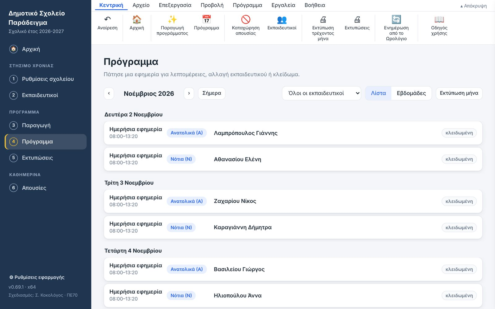
Το πρόγραμμα εμφανίζεται ανά μήνα (‹ › για αλλαγή μήνα, «Σήμερα» για επιστροφή). Δεξιά επιλέγετε εκπαιδευτικό (ή «Όλοι»), προβολή Λίστα ή Εβδομάδες, και «Εκτύπωση μήνα».
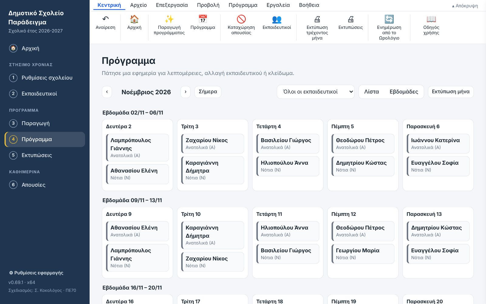
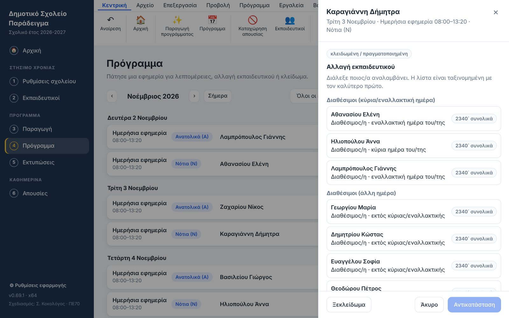
Πατήστε μια εφημερία. Δεξιά ανοίγει πάνελ με τα στοιχεία της και τη λίστα υποψηφίων, ταξινομημένη με τον καλύτερο πρώτο: πρώτα όσοι είναι διαθέσιμοι στην κύρια/εναλλακτική ημέρα τους, μετά όσοι είναι διαθέσιμοι άλλη ημέρα, και δίπλα σε καθέναν ο συνολικός του φόρτος και γιατί προτείνεται (ή γιατί δεν είναι δυνατός). Επιλέξτε λόγο (π.χ. Απουσία, Ανταλλαγή / αίτημα, Διόρθωση προγράμματος) και πατήστε Αντικατάσταση. Με «Κλείδωσε μετά την αλλαγή» η εφημερία δεν μετακινείται σε επόμενη ανακατανομή.
Από το ίδιο πάνελ μια εφημερία κλειδώνεται ως πραγματοποιημένη ή ξεκλειδώνεται. Για πολλές μαζί: Πρόγραμμα → «Κλείδωμα πραγματοποιημένων έως…».
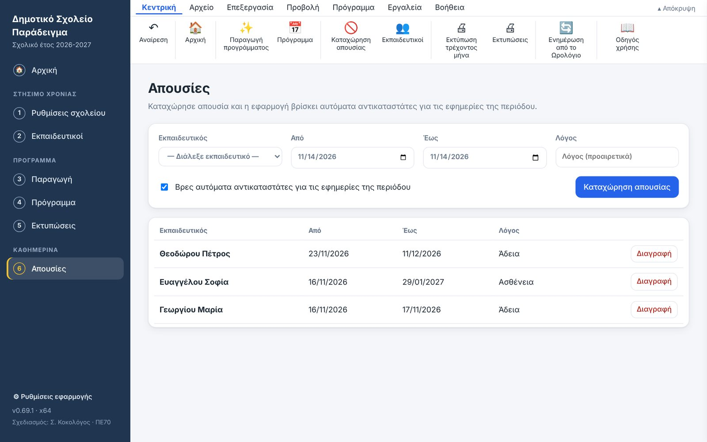
Οι καταχωρημένες απουσίες φαίνονται στον πίνακα από κάτω, με κουμπί «Διαγραφή». Οι κλειδωμένες εφημερίες και οι ημέρες πριν από σήμερα δεν αλλάζουν.
Αν χρησιμοποιείτε και το Ωρολόγιο, στη σελίδα εμφανίζονται οι απουσίες που δηλώθηκαν εκεί και δεν έχουν περάσει ακόμη (ενωμένες σε διαστήματα). Επιλέξτε ποιες θα καταχωρηθούν με αντικαταστάτες ή «Παράβλεψη επιλεγμένων». Οι απουσίες λίγων ωρών δεν επιλέγονται αυτόματα.
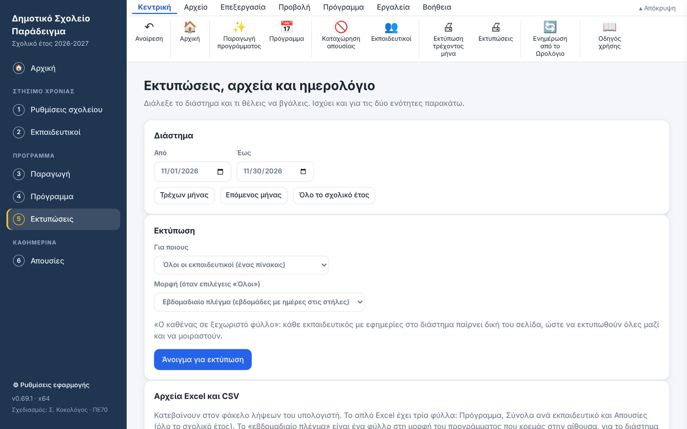
Επιλέξτε διάστημα (Τρέχων μήνας, Επόμενος μήνας, Όλο το σχολικό έτος ή δικές σας ημερομηνίες) και για ποιους: όλους σε έναν πίνακα, όλους σε εβδομαδιαίο πλέγμα (εβδομάδες με τις ημέρες στις στήλες και μία γραμμή ανά τομέα), τον καθένα σε ξεχωριστό φύλλο, ή έναν εκπαιδευτικό. Το «Άνοιγμα για εκτύπωση» ανοίγει σελίδα έτοιμη για εκτύπωση.
Στην ίδια σελίδα κατεβαίνουν: Excel με τρία φύλλα (Πρόγραμμα, Σύνολα ανά εκπαιδευτικό, Απουσίες), Excel σε μορφή εβδομαδιαίου πλέγματος, CSV και αρχεία .ics για το ημερολόγιο του κινητού (Google Calendar, Outlook) — ένα για όλους ή ένα ανά εκπαιδευτικό (zip).
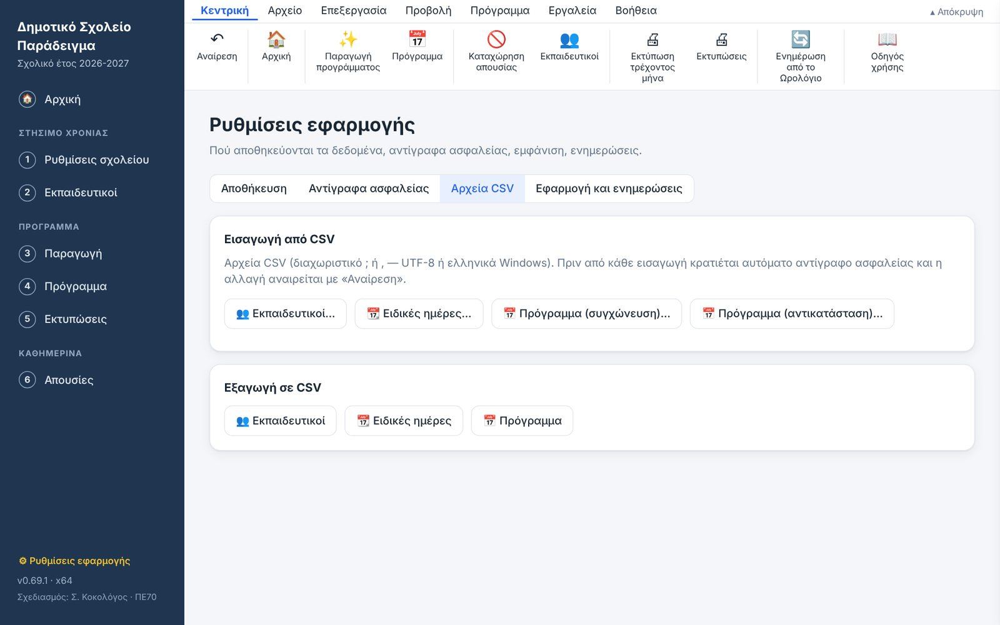
Στις Ρυθμίσεις εφαρμογής → Αρχεία CSV (ή Εργαλεία → Εισαγωγή / εξαγωγή CSV) εισάγονται από αρχεία CSV εκπαιδευτικοί, ειδικές ημέρες και πρόγραμμα (συγχώνευση με το υπάρχον ή αντικατάσταση όλου του προγράμματος). Δέχεται διαχωριστικό ; ή , και κωδικοποίηση UTF-8 ή ελληνικά Windows, όπως τα αρχεία που φτιάχνει η ίδια η εφαρμογή. Πριν από κάθε εισαγωγή κρατιέται αυτόματο αντίγραφο και η αλλαγή αναιρείται με «Αναίρεση». Για πλήρη μεταφορά με ιστορικό αντικαταστάσεων προτιμήστε το πλήρες αντίγραφο ασφαλείας (κεφάλαιο 12).
Οι αλλαγές στο πρόγραμμα (παραγωγή, αντικατάσταση, απουσία, κλείδωμα, εισαγωγή CSV κ.λπ.) αναιρούνται με ↶ Αναίρεση (γραμμή εργαλείων ή μενού Επεξεργασία), μία κάθε φορά, με τη σειρά που έγιναν.
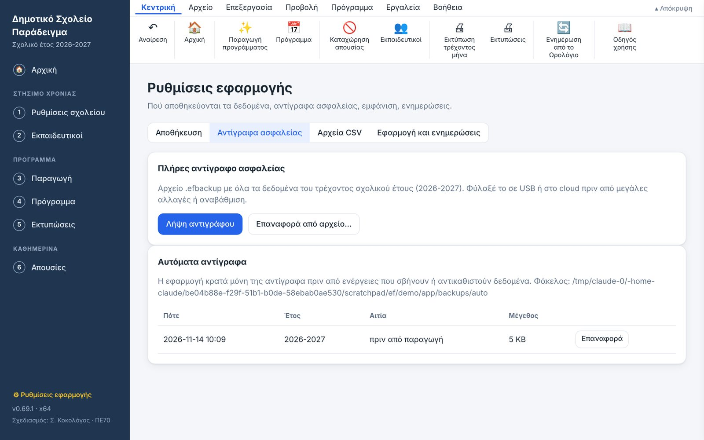
Η εφαρμογή παίρνει αυτόματα αντίγραφο (φάκελος backups\auto, τα 40 πιο πρόσφατα) πριν από: παραγωγή, αναίρεση, κλείδωμα πραγματοποιημένων, διαγραφή προγράμματος ή έτους, επαναφορά, εισαγωγή CSV, και μία φορά τη μέρα κατά το κλείσιμο. Από τη λίστα «Αυτόματα αντίγραφα» γίνεται επαναφορά με ένα κλικ.
Το «Λήψη αντιγράφου» κατεβάζει αρχείο .efbackup με όλα τα δεδομένα του τρέχοντος σχολικού έτους. Η «Επαναφορά από αρχείο…» ελέγχει πρώτα το αρχείο, δείχνει τι περιέχει και ζητά επιβεβαίωση.
Η εφαρμογή ελέγχει αυτόματα για νέα έκδοση στην εκκίνηση (το πολύ μία φορά το 24ωρο· ρυθμίζεται στις Ρυθμίσεις εφαρμογής → Εφαρμογή και ενημερώσεις). Όταν υπάρχει νέα έκδοση εμφανίζεται μπλε ειδοποίηση επάνω σε κάθε σελίδα με «Λήψη και εγκατάσταση τώρα»· τα δεδομένα δεν επηρεάζονται.
| Πρόβλημα | Τι κάνω |
|---|---|
| Μήνυμα ότι ο φάκελος δεδομένων χρησιμοποιείται ήδη | Η εφαρμογή είναι ανοιχτή σε άλλον υπολογιστή. Κλείστε την εκεί. Αν είστε σίγουροι ότι δεν τρέχει πουθενά, το μήνυμα δείχνει ποιο αρχείο κλειδώματος να σβήσετε. |
| Δεν ανοίγει παράθυρο | Περιμένετε λίγα δευτερόλεπτα: αν ο Edge δεν ανοίξει, η εφαρμογή ανοίγει στον προεπιλεγμένο περιηγητή. Αν πάλι δεν εμφανιστεί, κλείστε την από τη Διαχείριση εργασιών και ξανανοίξτε την. |
| Στην Αρχική: «Το πρόγραμμα φτάνει έως …» | Το πρόγραμμα δεν καλύπτει όλη τη χρονιά. Κάντε Παραγωγή → Ανακατανομή από ημερομηνία και μετά. |
| Εφημερίες «εκτός δηλωμένης διαθεσιμότητας» | Ο αλγόριθμος τις έβαλε ως τελευταία λύση. Χρησιμοποιήστε τη Διάγνωση συγκρούσεων και ανοίξτε διαθεσιμότητα σε περισσότερους. |
| Μεγάλη «Διαφορά φόρτου» | Συνήθως οφείλεται σε απουσία. Θα μικρύνει με την αναπλήρωση στις επόμενες εβδομάδες. |
| Άλλαξε το ωρολόγιο πρόγραμμα μέσα στη χρονιά | Κλειδώστε ό,τι πραγματοποιήθηκε, ενημερώστε τις διαθεσιμότητες (ή κάντε ξανά εισαγωγή ωρολογίου) και κάντε ανακατανομή από την ημερομηνία της αλλαγής. |
| Έκανα λάθος σε μια αλλαγή | Πατήστε Αναίρεση. Για μεγαλύτερο πρόβλημα, επαναφέρετε ένα αυτόματο αντίγραφο. |
| Σφάλμα που δεν καταλαβαίνω | Η εφαρμογή γράφει τα σφάλματα στο logs\efimeries.log του φακέλου δεδομένων. Στείλτε το αρχείο αυτό. |
Πληροφορίες, προβλήματα ή προτάσεις βελτίωσης: Κοκολόγος Σταμάτης, ΠΕ70 · https://github.com/stam1966/efimeries-ekpaideftikon/issues